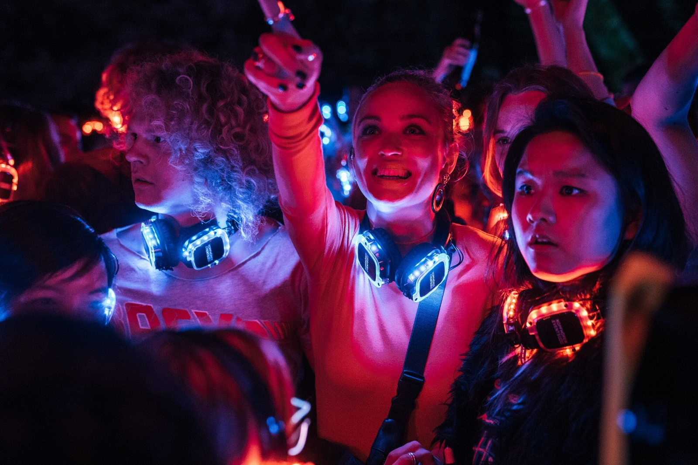

BioHackers est une série Netflix allemande crée par Christian Ditter en août 2020, elle se compose d’une saison de six épisodes pour le moment. Dans cette série Mia Akerlund est une jeune étudiante en médecine à l’université de Fribourg, en Allemagne, fait la découverte d’une technologie de pointe sur le bio-piratage et l’ADN grâce à une jeune docteure, Dr. Lorenz.
Mia va se retrouve très impliquer, mais ce que ne sait pas le Dr Lorenz c’est que Mia connait le sujet depuis quelques années maintenant, depuis que son frère, Ben, est décédé suite à une des expériences du Dr. Lorenz. Toute la vie de Mia après le décès de son frère a été bouleversé, en voulant aller dénoncer Tanja Lorenz, Mia et ses parents ont eu un mystérieux accident de voiture, Mia a vu ses parents mourir sous ses yeux. Ce que ne savait pas la Dr. Lorenz c’est que Mia a survécu. Elle a donc consacré ses études à la médecine pour pouvoir se venger. Dès son arrivée à l’université, Mia se lie d’amitié avec ses colocataires, se rapproche de l’assistant du Dr. Lorenz, Jasper, et va également essayer de décrocher un job a l’institut biomédical pour pouvoir se rapprocher de sa cible.
Mia de son vrai nom Emma Engels va récolter des informations sur Tanja à l’aide de Niklas, le meilleur ami de Jasper, qui a découvert qui elle était vraiment après avoir trouvé par hasard le dossier médical de Mia au moment où Lorenz faisait des expériences sur elle et son frère. Après une soirée, Mia, Jasper et Niklas se retrouve dans la résidence privée de Tanja Lorenz, Mia en profite pour rechercher des informations dans son ordinateur personnelle car elle n’avait rien trouver dans les archives de l’institut plus tôt. Mais malheureusement Tanja rentre plus tôt que prévu, Mia réussi à récupérer des informations à temps. Mais Dr. Lorenz se doute de quelque chose, elle va donc demander à Jasper de se méfier de Mia et de la surveiller. Au fur et à mesure des épisodes, Lorenz et Jasper commence à découvrir qui est réellement Mia. Au nom de Lorenz, Jasper qui avait développé des moustiques porteurs d’un virus dangereux appeler Coxsacki, à libérer ces derniers dans un train qui amenait Mia et Niklas à Berlin pour rendre publique toutes les informations qu’ils avaient trouvés sur les expériences illégales du Dr. Lorenz au journaliste Andreas Winter qui en réalité n’a pas l’intention de dévoiler les machinations de Lorenz.